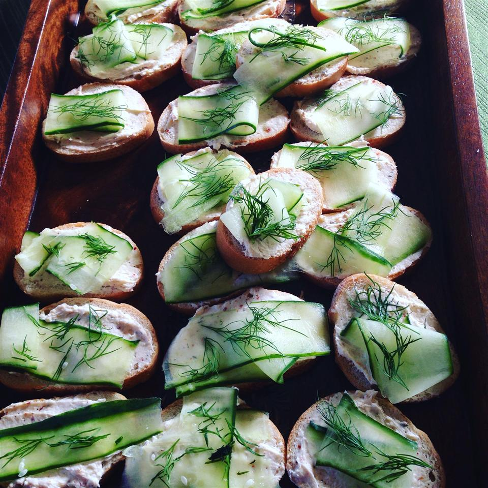

Creamy Dill Cucumber Toasties

Description
I got this recipe years ago from a friend of a friend. I love it and make it all the time for parties. It looks great on the platter, and it is super easy! Everyone loves it!
Ingredients
- 1 (8 ounce) package cream cheese, softened
- 1 (.7 ounce) package dry Italian-style salad dressing mix
- ½ cup mayonnaise
- 1 French baguette, cut into 1/2 inch thick circles
- 1 cucumber, sliced
- 2 teaspoons dried dill weed
Steps
- In a medium bowl, mix together cream cheese, dressing mix and mayonnaise.
-
Spread a thin layer of the cream cheese mixture on a slice of bread, and top with a slice of cucumber. Sprinkle with dill. Repeat with remaining ingredients.